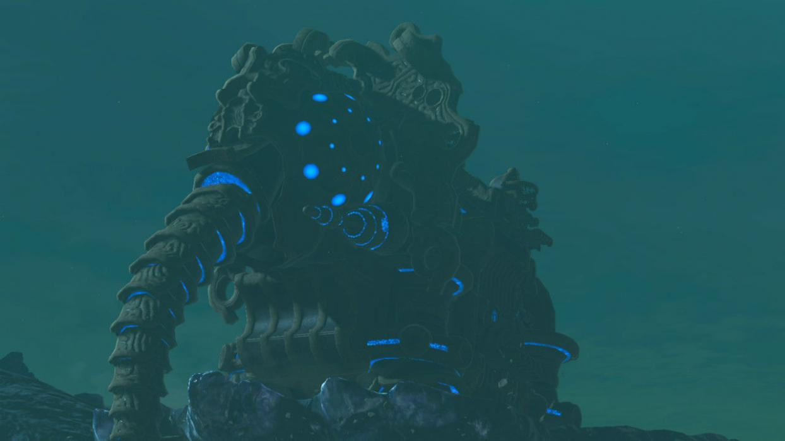
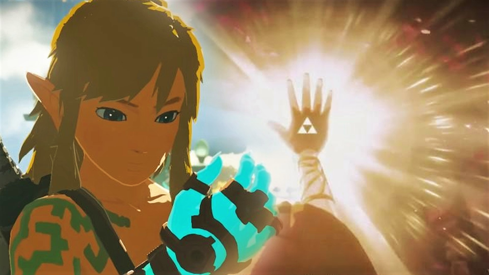

Link

Link, el héroe elegido por la Espada Maestra.
El protagonista del juego. Tras un largo sueño en el Santuario de la Vida, despierta para salvar Hyrule del desastre más grande de su historia.
Link, el héroe elegido por la Espada Maestra.
El protagonista del juego. Tras un largo sueño en el Santuario de la Vida, despierta para salvar Hyrule del desastre más grande de su historia.

Zelda, portadora del poder sagrado.
La princesa de Hyrule. Su lucha interior es clave para mantener a raya a Ganon mientras espera el despertar de Link.
Ganon, el cataclismo que amenaza el reino.
Una entidad maligna que renace cada cierto tiempo. En esta entrega adopta la forma de “Ganon el Cataclismo”.
Princesa Zora y piloto de Vah Ruta.
Guerrero Rito, piloto de Vah Medoh.
Jefa Gerudo y piloto de Vah Naboris.
Guerrero Goron, piloto de Vah Rudania.
| Personaje | Arma Especial | Bestia Divina | Descripción |
|---|---|---|---|
|
 |
 | Link es el héroe que despierta tras 100 años para salvar Hyrule. Portador de la Espada Maestra y elegido para pilotar la Bestia Divina Ruta. |
|
 | No pilota una bestia divina | Zelda es la princesa de Hyrule y portadora del poder sagrado de la Luz, con el que mantiene encerrado a Ganon. |
 |
No tiene bestia divina | Ganon, conocido como la Calamidad, es la amenaza milenaria que busca destruir por completo el reino de Hyrule. |